Every cell of a multicellular organism generally contains the same genetic material. One has only to look at a human being to marvel at the wealth of information contained in each human cell. It should come as no surprise that the DNA molecules containing the cellular genes are by far the largest macromolecules in cells. They are commonly packaged into structures called chromosomes. Most bacteria and viruses have a single chromosome; eukaryotes usually have many. A single chromosome typically contains thousands of individual genes. The sum of all the genes and intergenic DNA on all the different chromosomes of a cell is referred to as the cellular genome.
Measurements carried out in the 1950s indicated that the largest DNAs had molecular weights of 106 or less, equivalent to about 15,000 base pairs. But with improved methods for isolation of native DNAs, their molecular weights were found to be much higher. Today we know that native DNA molecules, such as those from E. coli cells, are so large that they are easily broken by mechanical shear forces, and therefore are not readily isolated in intact form.
| The size of DNA molecules represents an interesting biological problem in itsel?Chromosomal DNAs are often many orders of magnitude longer than the biological packages (cells or viruses) that contain them (Fig. 23-1). In this chapter we move from the secondary structure of DNA considered in Chapter 12 to the extraordinary degree of organization required for the tertiary packaging of DNA into chromosomes. First we examine the size of viral DNAs and cellular chromosomes and the organization of genes and other sequences within them. We then turn to the discipline of DNA topology to give formal definition to the twisting and coiling of DNA molecules. Finally, we consider the protein-DNA interactions that organize chromosomes into compact structures. | 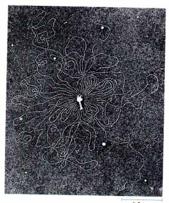 Figure 23-1 Electron micrograph of bacteriophage T2 surrounded by its single, linear molecule of DNA. The DNA was released by lysing the bacteriophage in distilled water and allowing the DNA to spread on the water surface. |
We begin with a survey of the DNA molecules of viruses and of cells, both prokaryotic and eukaryotic. Chromosomes contain, in addition to genes, special-function sequences that aid in the packaging and segregation of chromosomes to daughter cells at cell division. The structure of chromosomes will be examined, with a focus on the various types of DNA sequences found within them.
Viruses generally require considerably less genetic information than cells, because they rely on many functions of a host cell to reproduce themselves. Viral genomes can be made up of either RNA or DNA. Almost all plant viruses and some bacterial and animal viruses contain RNA. RNA viruses tend to have particularly small genomes. The genomes of DNA viruses, in contrast, span a wide range of sizes (Table 23-1). From the molecular weight of a double-stranded (duplex) viral DNA it is possible to calculate its contour length (its helix length), given that each nucleotide pair has an average molecular weight of about 650 and there is one nucleotide pair for every 0.36 nm of the duplex (see Fig. 12-15). Note that the DNA found in some viruses is single-stranded rather than double-stranded.
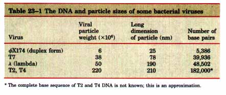
Many viral DNAs have covalently linked ends and are therefore circular (in the sense of an endless belt, rather than a perfect round) during at least part of their life cycle. During viral replication within a host cell, specific types of viral DNA called replicative forms may appear; for example, linear DNAs often become circular and all singlestranded DNAs become double-stranded.
A typical medium-sized DNA virus is bacteriophage ? (lambda) of E. coli. In its replicative form inside cells, its DNA is a circular double helix. Double-stranded ? DNA contains 48,502 base pairs and has a contour length of 17.5 µm. Bacteriophage ΦX174 is a much smaller DNA virus; the DNA in a ΦX174 viral particle is a single-stranded circle. Its double-stranded replicative form contains 5,386 base pairs. Another important point about viral DNAs will be echoed in sections to follow: their contour lengths are much greater than the long dimensions of the viral particles in which they are found. The DNA of bacteriophage T2, for example, is about 3,500 times longer than the viral particle itself (Fig. 23-1).
|
Bacteria contain much more DNA than the DNA viruses. For example, a single E. coli cell contains almost 200 times as much DNA as a bacteriophage A particle. The DNA in an E. coli cell is a single, covalently closed double-stranded circular molecule. It contains about 4.7 × 106 base pairs and has a contour length of about 1.7 mm, some 850 times the length of an E. coli cell ( Fig. 23-2 ). Again, the DNA molecule must have a tightly compacted tertiary structure. In addition to the very large, circular DNA chromosome found in the nucleoid, many species of bacteria contain one or more small, circular DNA molecules that are free in the cytosol. These extrachromosomal elements are called plasmids (Fig. 23-3). Many plasmids are only a few thousand base pairs long, but some contain over 105 base pairs. Plasmids carry genetic information and undergo replication to yield daughter plasmids, which pass into the daughter cells at cell division. Ordinarily, plasmids exist separately, detached from the chromosomal DNA. A few classes of plasmid DNAs are sometimes inserted into the chromosomal DNA and later excised in a precise manner by means of specialized recombination processes. 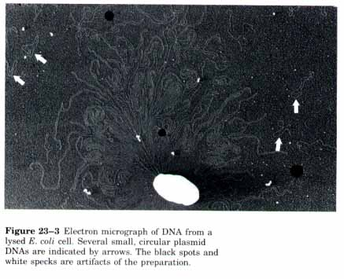 | 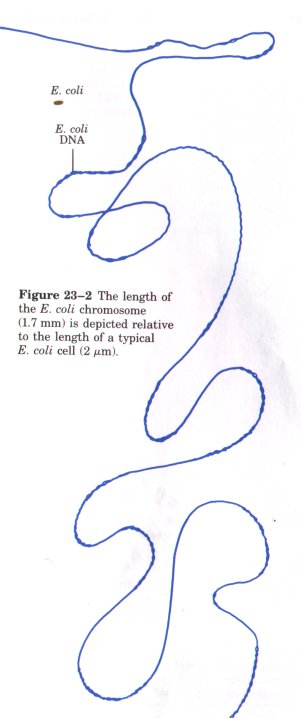 |
Plasmids have been found in yeast and other fungi as well as in bacteria. In many cases plasmids confer no obvious advantage on their host, and their sole function appears to be self propagation. However, some plasmids carry genes that make a host bacterium resistant to antibacterial agents. For example, plasmids carrying the gene for the enzyme ß-lactamase confer resistance to ß-lactam antibiotics such as penicillin and amoxicillin. Plasmids also may pass from an antibioticresistant cell to an antibiotic-sensitive cell of the same or another bacterial species, thus rendering the latter resistant. The extensive use of antibiotics has served as a strong selective force for the spread of these plasmids in disease-causing bacteria, creating multiply resistant bacterial strains, particularly in hospital settings. Physicians are becoming reluctant to prescribe antibiotics unless a bacterial infection is confirmed. For similar reasons, the widespread use of antibiotics in animal feeds is being curbed.
Plasmids are useful models for the study of many processes in DNA metabolism. They are relatively small DNA molecules and hence can quite easily be isolated intact from bacterial and yeast cells. Plasmids have also become a central component of the modern technologies associated with the isolation and cloning of genes. Genes from a variety of species can be inserted into isolated plasmids, and the modified plasmid can then be reintroduced into its normal host cell. Such a plasmid will be replicated and transcribed, and may also cause the host cell to make the proteins coded by the foreign gene, even though it is not part of the normal genome of the cell. Chapter 28 describes how such recombinant DNAs are made.
An individual cell of a yeast, one of the simplest eukaryotes, has four times more DNA than an E. coli cell. Cells of Drosophila, the fruit fly used in classical genetic studies, have more than 25 times as much DNA as E. coli cells. Each cell of human beings and many other mammals has about 600 times as much DNA as E. coli, and the cells of many plants and amphibians have an even greater amount. Note that the nuclear DNA molecules of eukaryotic cells are linear, not circular.
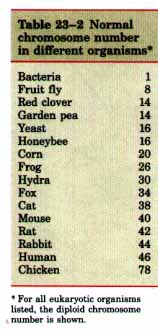
The total contour length of all the DNA in a single human cell is about 2 m, compared with 1.7 mm for E. coli DNA. In the approximately 1014 cells of the adult human body, the total length of all the DNA would be about 2 x 1013 m or 2 x 1010 km. Compare this with the circumference of the earth (4 x 104 km) or the distance between the earth and the sun (1.5 x 108 km). Once again it becomes clear that DNA packaging in cells must involve an extraordinary degree of organization and compaction.Microscopic observation of nuclei in dividing eukaryotic cells has shown that the genetic material is subdivided into chromosomes, their diploid number depending upon the species of organism (Table 23-2). Human cells, for example, have 46 chromosomes. Each chromosome of a eukaryotic cell, such as that shown in Figure 23-4a, can contain a single, very large, duplex DNA molecule, which may be from 4 to 100 times larger than that of an E. coli cell. For example, the DNA of one of the smaller human chromosomes has a contour length of about 30 mm, almost 15 times longer than the DNA of E. coli. The DNA molecules in the 24 different types of chromosomes of human cells (22 + X + Y) vary in length over a 25-fold range. Each different chromosome in eukaryotes carries a characteristic set of genes.
| In addition to the DNA in the nucleus of eukaryotic cells,
very small amounts of DNA, differing in base sequence from nuclear DNA, are present within
the mitochondria. Chloroplasts of photosynthetic cells also contain DNA. Usually less than
0.1% of all the cell DNA is present in the mitochondria in typical somatic cells, but in
fertilized and dividing egg cells, where the mitochondria are much more numerous, the
total amount of mitochondrial DNA is correspondingly larger. Mitochondrial DNA (mDNA) is a
very small molecule compared with the nuclear chromosomes. In animal cells it contains
less than 20,000 base pairs (16,569 base pairs in human mDNA) and occurs as a circular
duplex. Chloroplast DNA molecules also exist as circular duplexes and are considerably
larger than those of mitochondria. The evolutionary origin of mitochondrial and chloroplast DNAs has been the subject of much speculation. A widely accepted view is that they are vestiges of the chromosomes of ancient bacteria that gained access to the cytoplasm of host cells and became the precursors of these organelles (see Fig. 2-17). Mitochondrial DNA codes for the mitochondrial tRNAs and rRNAs and for a few mitochondrial proteins. More than 95o/o of mitochondrial proteins are encoded by nuclear DNA. Mitochondria and chloroplasts divide when the cell divides (Fig. 23-5). Before and during division of these organelles their DNA is replicated and the daughter DNA molecules pass into the daughter organelles. |
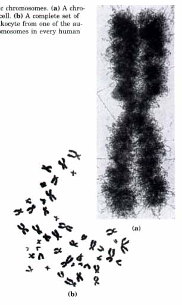 Figure 23-4 Eukaryotic chromosomes. (a) A chromosome from a human cell. (b) A complete set of chromosomes from a leukocyte from one of the authors. There are 46 chromosomes in every human somatic cell. |
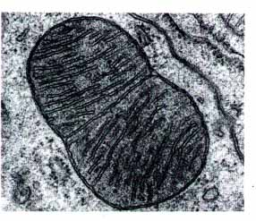 |
Figure 23-5 dividing mitochondrion. Many mi-tochondrial proteins and RNAs are encoded by the mitochondrial DNA (not visible here), which is replicated each time the mitochondrion divides. |
Our present understanding of the gene has evolved considerably over the last century. A gene is defined in the classical biological sense as a portion of a chromosome that determines or affects a single character or phenotype (visible property), for example, eye color. But there is also a molecular defmition, first proposed by George Beadle and Edward Tatum in 1940. They exposed spores of the mold Neurospora crassa to x rays and other agents that damage DNA and sometimes cause alterations in the DNA sequence (mutations). Some mutants were found to be deficient in one or another specific enzyme, resulting in the failure of a metabolic pathway. This observation led Beadle and Tatum to conclude that a gene is a segment of the genetic material that determines or codes for one enzyme: the one gene-one enzyme hypothesis. Later this concept was broadened to one gene-one protein, because many genes code for proteins that are not enzymes. The present biochemical definition of a gene is somewhat more precise. Recall that many proteins have multiple polypeptide chains (Chapter 6). In some multichain proteins, all the polypeptide chains are identical, in which case they can all be encoded by the same gene. Others have two or more different kinds of polypeptide chains, each with a distinctive amino acid sequence. Hemoglobin A, the major adult hemoglobin of humans, for example, has two kinds of polypeptide chains, a and ß chains, which differ in amino acid sequence and are encoded by two different genes. Thus the gene-protein relationship is more accurately described by the phrase "one gene-one polypeptide." However, not all genes are ultimately expressed in the form of polypeptide chains. Some genes code for the different kinds of RNAs such as tRNAs and rRNAs (Chapters 12 and 25). Genes that code for either polypeptides or RNAs are known as structural genes: they encode the primary sequence of some final gene product, such as an enzyme or a stable RNA. DNA also contains other segments or sequences that have a purely regulatory function. Regulatory sequences provide signals that may denote the beginning and end of structural genes, or participate in turning on or off the transcription of structural genes, or function as initiation points for replication or recombination (Chapter 27). |
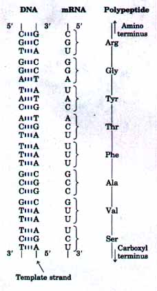 Figure 23-6 Colinearity of the nucleotide sequences of DNA, mRNA, and the amino acid sequence of polypeptide chains. The triplets of nucleotide units in DNA determine the sequence of amino acids in proteins through the intermediary formation of mRNA, which has nucleotide triplets (codons) complementary to those of the DNA. Only one of the DNA strands, the template strand, serves as a template for mRNA synthesis. |
The minimum overall size of genes can be estimated directly. As will be described in detail in Chapter 26, each amino acid of a polypeptide chain is coded by a sequence of three consecutive nucleotides in a single strand of DNA (Fig. 23-6). Because there are no signals for "commas" in the genetic code, the coding triplets of DNA are generally arranged sequentially, corresponding to the sequence of amino acids in the polypeptide for which it codes. Figure 23-6 shows the principle of the coding relationships between DNA, RNA, and proteins. A single polypeptide chain may have anywhere from about fifty to several thousand amino acid residues in a specific sequence, thus a gene coding for the biosynthesis of a polypeptide chain must have, correspondingly, at least 150 to 6,000 or more base pairs. For an average polypeptide chain of 350 amino acid residues, this would correspond to 1,050 base pairs. We will see later that many genes in eukaryotes and a few in prokaryotes are interrupted by noncoding DNA segments called introns, and can therefore be considerably longer than the simple calculations outlined above would suggest.
How many genes are in a single chromosome? We can give an approximate answer to this question in the case of E. coli. If the average gene is 1,050 base pairs long, the 4.7 million base pairs in the E. coli chromosome could accommodate about 4,400 genes. The products of over 1,000 E. colz genes have already been characterized, and the number is increasing. A growing fraction of the E. coli chromosome has been sequenced, and the number of genes it contains will be known with some precision when this effort is completed.
| Bacteria usually have only one chromosome per cell, and in nearly all
cases each chromosome contains only one copy of any given gene. A very few genes, such as
those for rRNAs, are repeated several times. Regulatory and structural gene sequences
account for much of the DNA in prokaryotes. Moreover, almost every gene is precisely
colinear with the amino acid sequence (or RNA sequence) for which it codes (Fig. 23-6 ). The organization of genes in eukaryotic DNA is structurally and functionally much more complex, and the study of eukaryotic chromosome structure has yielded many surprises. Tests made of the extent to which segments of mouse DNA occur in multiple copies had an unexpected outcome. About 10% of mouse DNA consists of short lengths of less than 10 base pairs that are repeated millions of times per cell. These are called highly repetitive segments. Another 20% of mouse DNA was found to occur in lengths up to a few hundred base pairs that are repeated at least 1,000 times, designated moderately repetitive. The remainder, some 70?0 of the DNA, consists of unique segments and segments that are repeated only a few times. |
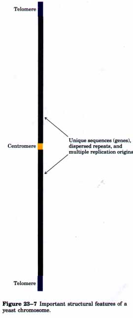 |
Some of the repetitive DNA may simply be "junk DNA," vestiges of evolutionary sidetracks. At least some of it has functional signiiicance, however. The most highly repeated sequences are called satellite DNA because their base compositions are generally unusual, permitting their separation from the rest of the DNA when fragmented cellular DNA samples are centrifuged in cesium chloride density gradients. Satellite DNA is not believed to encode proteins or RNAs. Much of the highly repetitive DNA is associated with two important structures in eukaryotic chromosomes-centromeres and telomeres.
Each chromosome has a single centromere, which functions as an attachment point for proteins that link the chromosome to the microtubules of the mitotic spindle (see Fig. 2-14). This attachment is essential for the ordered segregation of chromosomes to daughter cells during cell division. The centromeres of yeast chromosomes have been isolated and studied (Fig. 23-7). The sequences essential to centromere function are about 130 base pairs long and are very rich in A=T pairs. The centromeres of higher eukaryotes are much larger. In higher eukaryotes (but not in yeast), satellite DNA is generally found in the centromeric regior~ and consists of thousands of tandem (side-byside and in the same orientation) copies of one or a few short sequences. Characterized satellite sequences are generally 5 to 10 base pairs long. The precise role of satellite DNA in centromere function is not yet understood.
Telomeres are sequences located at the ends of the linear eukaryotic chromosomes, which help stabilize them. The best-characterized telomeres are those of simpler eukaryotes. Yeast telomeres end with about 100 base pairs of imprecisely repeated sequences of the form
(5')(TxGy)n
(3')(AxCy)n
where x and y generally fall in the range of 1 to 4. The ends of a linear DNA molecule cannot be replicated by the cellular replication machinery (which may be one reason why bacterial DNA molecules are circular). The repeated sequences in telomeres are added to chromosome ends by special enzymes, one of which is telomerase, which will be discussed in more detail in Chapter 25. What controls the number of repeats in a telomere is not known. The telomere repeats are a very unusual DNA structure.
Efforts have begun to construct artificial chromosomes as a means of better understanding the functional significance of many structural features of eukaryotic chromosomes. A reasonably stable, artificial, linear chromosome requires only three components: a centromere, telomeres at the ends, and sequences that direct the initiation of DNA replication. Most moderately repetitive DNA consists of 150 to 300 base-pair repeats scattered throughout the genome of higher eukaryotes. Some of these repeats have been characterized. A number of them have some of the structural properties of transposable elements, sequences that move about the genome at very low frequency (Chapter 24). In humans, one class of these repeats (about 300 base pairs long) is called the Alu family, so named because their sequence generally includes one copy of the recognition sequence for the restriction endonuclease ALuI. (Restriction endonucleases are described in Chapter 28. ) Hundreds of thousands of Alu repeats occur in the human genome, comprising 1 to 3% of the total DNA. They apparently were derived from a gene for 7SL RNA, a component of a complex called the signal-recognition particle (SRP, Chapter 26) that functions in protein synthesis. The Alu repeats, however, lack parts of the 7SL RNA gene sequence and do not produce functional 7SL RNAs. When Alu repeats are grouped with other classes of repeats with similar sizes and sequence structures, they make up 5 to 10% of the DNA in the human genome. No function for this DNA is known. The unique sequences in eukaryotic chromosomes include most of the genes. There are an estimated 100,000 different genes in the human genome. |
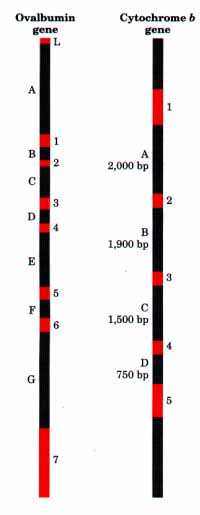 Figure 23-8 Intervening sequences, or introns, in two eukaryotic genes. The gene for ovalbumin has seven introns (A to G), splitting the coding sequences into eight exons (L, 1 to 7). The gene for cytochrome b has four introns and five exons. In both cases, more DNA is devoted to introns than t~ exons. The number of base pairs (bp) in the intron of the cytochrome b gene is shown. |
| Many, if not most, eukaryotic genes have a distinctive and puzzling
structural feature: their nucleotide sequences contain one or more intervening segments of
DNA that do not code for the amino acid sequence of the polypeptide product. These
nontranslated inserts interrupt the otherwise precisely colinear relationship between the
nucleotide sequence of the gene and the amino acid sequence of the polypeptide it encodes
(Fig. 23-8). Such nontranslated DNA segments in genes are called intervening sequences, or
introns, and the coding segments are called exons. A well-known example is the gene coding
for the single polypeptide chain of the avian egg protein ovalbumin. As can be seen in Figure 23-8, the introns of this particular gene are much longer than the exons; altogether the introns make up 85% of the DNA of this gene. Most eukaryotic genes examined thus far appear to contain introns that vary in number, position, and the fraction of the total length of the gene they occupy. For example, the serum albumin gene contains 6 introns, the gene for the protein conalbumin of the chicken egg contains 17 introns, and a collagen gene has been found to have over 50 introns. Genes for histones provide an example of a family of genes that appear to have no introns. Only a few prokaryotic genes contain introns. In most cases the function of introns is not clear. |
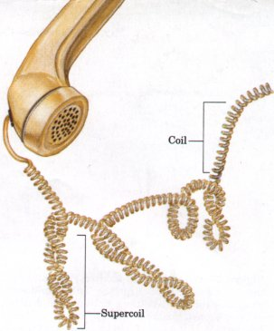 Figure 23-9 Supercoils. A typical phone cord is a coil. A phone cord twisted as shown is a supercoil. The illustration is especially appropriate, because an examination of the twisting of phone cords helped lead Jerome Vinograd and colleagues to the insight that many properties of small, circular DNAs could be explained by supercoiling. They first detected DNA supercoiling in small, circular viral DNAs in 1965. |